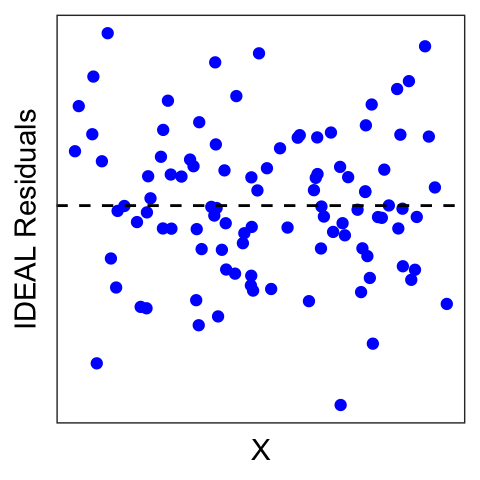
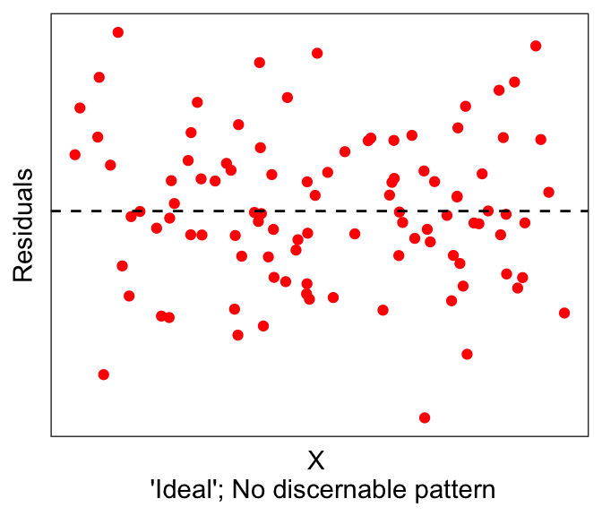
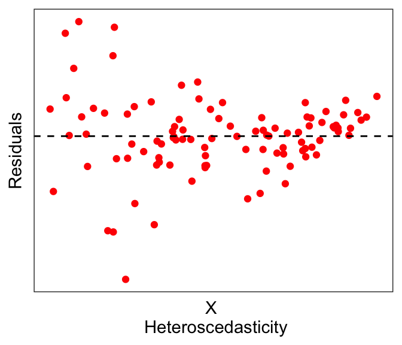

5.9 Assumptions behind Linear Regression
BT1101
Linear Regression is a powerful tool, but also makes a lot of assumptions about the data. These assumptions are necessary in order for the mathematical derivations to work out nicely (e.g., we saw the nice solution to the the Ordinary Least Squares minimization problem). Thus, we have to be mindful of these assumptions, as statistical tools become less valid when there are violations of these assumptions.
The following table summarizes some of the assumptions behind linear regression, and how we can check that these assumptions are met (or at least, not violated). Note that in some of these cases there are formal ways to check (e.g. Breusch-Pagan test for homoscedasticity), but for right now our goal is to build intuition, so we will explore graphical methods.
| Assumption | How to (informally) check |
|---|---|
| There exists a linear relationship between dependent variable and the independent variable | Examine X-Y scatterplot – there should be a linear trend. |
| There are no outliers | Examine X-Y scatterplot and the univariate histograms for outliers |
| Errors are normally-distributed about zero | Examine the residual plot: Residuals should be normally distributed about 0 |
| There is no heteroscedasticity / there IS homoscedasticity. i.e., Errors are independent of the independent variable |
Examine the residual plot: Residuals should not depend on X |
| No or little multicollinearity | Check correlation between independent variables / calculate variance inflation factor in linear model |
| Errors are independent of each other; they are not correlated. | Check for autocorrelation between errors. |
We already saw the first two assumptions in the previous few sections: that we expect there to be a linear relationship between the DV and the IV(s), without any outliers. The way to visually eyeball this is to simply plot the X-Y scatterplot, also known as a bivariate (“two-variable”) scatterplot.
5.9.1 Residual plots
We saw earlier that the objective of Ordinary Least Squares regression is to find the line that minimizes the sum of the (squares of the) residuals \(e_i = Y_i - \hat{Y_i}\). Below, we have the best-fit linear line to a (purposely) non-linear dataset. The residual errors are shown in red, going from the actual data points (\(Y_i\)’s) to the predicted line (\(\hat{Y_i}\)’s).
## `geom_smooth()` using formula 'y ~ x'Now let’s instead plot the residuals \(e_i\) against \(X\). That is, instead of plotting \(Y\) on the vertical axis, we plot the length of the red bars \(e_i\) against X:
Ideally, residuals should be normally distributed around 0, and not depend on X.

But we clearly see from the red dots above that it is not the case here that the residuals are normally distributed around 0. In fact, there seems to be some non-linearity in the data.
One solution might be to do a non-linear transformation to one of the variables, e.g. \(\log(...)\), \(exp(...)\). Let’s try taking the logarithm of the dependent variable, e.g. \(\log(Y) \sim X\)
One thing to note here is that if you just write
log()in R you’ll get the natural logarithm (log base e); you’ll need to specifylog10()if you want a base10 logarithm. They both achieve the same thing in terms of the purpose of the transformation here. The main difference is in interpretability; if your variable is something like GDP, then a base10 log will be more interpretable, because a base10 log of 3 is a thousand, 4 is ten thousand, and so forth.
## `geom_smooth()` using formula 'y ~ x'The residuals of the transformed plot look a lot better. But actually here we see a slightly different problem: notice that the errors seem to be larger for smaller values of \(X\): This is called heteroscedasticity, which by definition is when the residual error depends on the value of the independent variable. Having heteroscedasticity often implies that your model is missing some variables that can explain this dependence.
Linear regression often assumes no or little heteroscedasticity; in other words, linear regression assumes homoscedasticity. While there are formal tests for heteroscedasticity, for now we leave it as something that we might be able to eyeball from the data.
In summary, residual plots should look distributed with no discernable pattern, with respect to the independent variables (first graph below). There are many possibilities, such as having non-normal distributions (second graph below) or heteroscedastic errors (third graph below).

If you run a linear model, you can easily pull the residuals using residuals(lm_object). For example, let’s take the mtcars example predicting fuel economy (mpg) using horsepower (hp).
# Use mtcars, run simple lm()
data(mtcars)
fit1 <- lm(mpg ~ hp, mtcars)
mtcars$predicted <- predict(fit1) # get predictions if needed
mtcars$residuals <- residuals(fit1) # get residuals
# plotting DV against IV
ggplot(mtcars, aes(x=hp, y=mpg)) + geom_point(color="blue") +
geom_smooth(method="lm", se=FALSE) + theme_bw()## `geom_smooth()` using formula 'y ~ x'# plotting the residuals against IV
ggplot(mtcars, aes(x=hp, y=residuals)) + geom_point(color="red") +
geom_hline(yintercept=0, linetype="dashed") + theme_bw()We see what looks like maybe one outlier right on the right edge of the graph, but aside from that the residuals look fine.